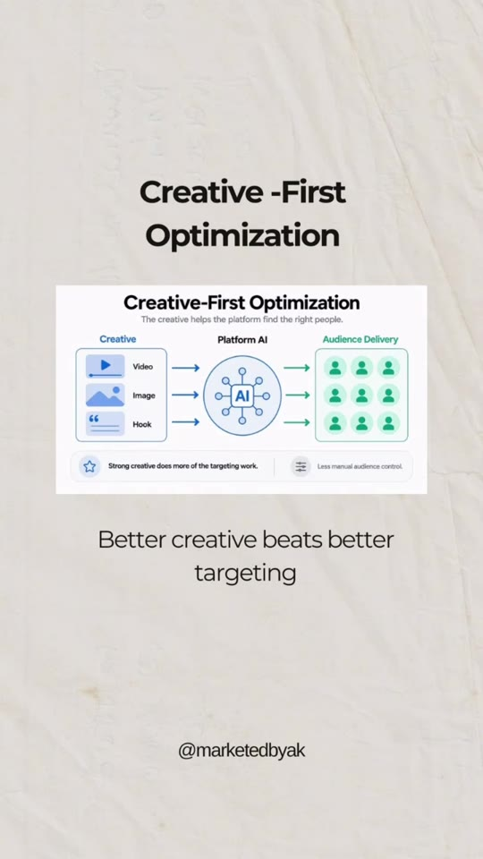
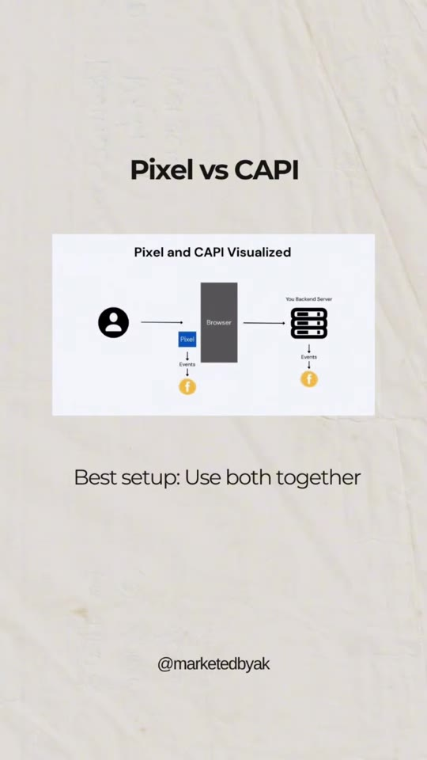
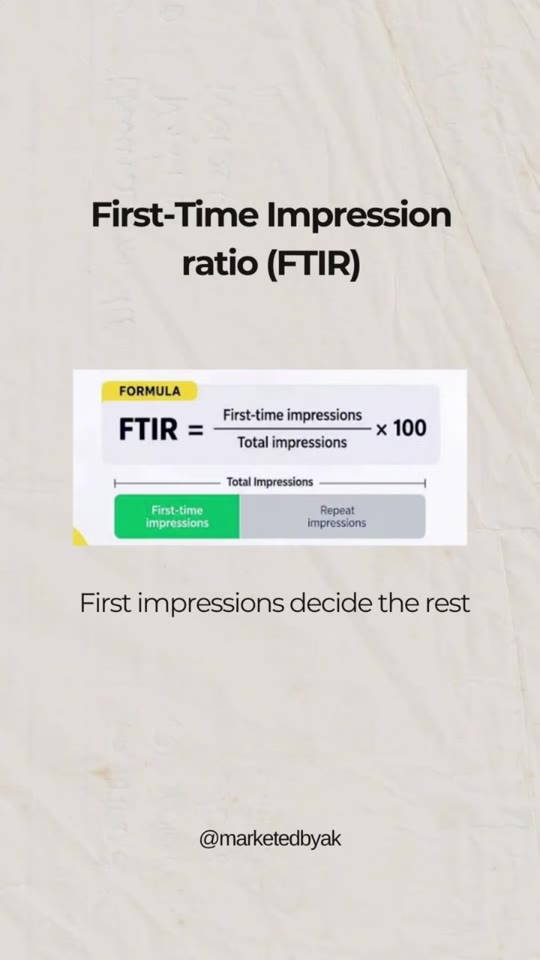
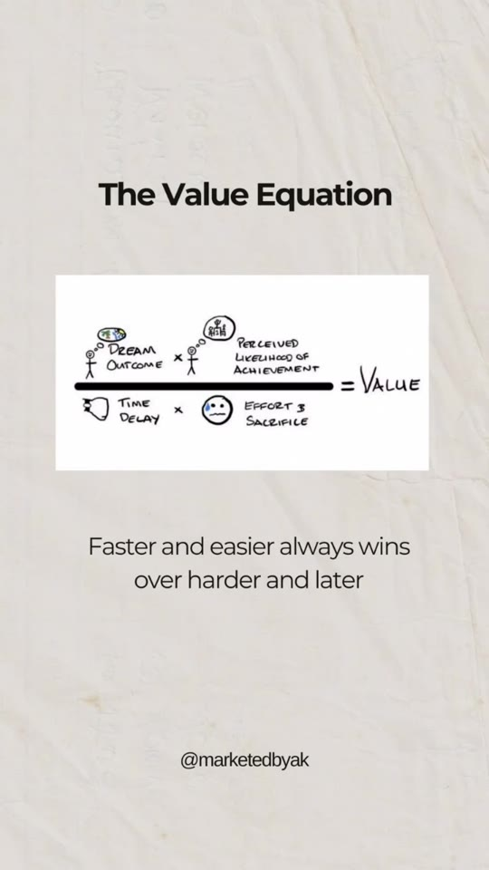

Meta-Ads · Foundations
10 Core Concepts to Master Meta Ads: Tracking, Funnels, Economics & Creative Optimization
A high-density primer outlining the 10 foundational mental models, quantitative metrics, and technical configurations required to scale profitable paid advertising campaigns on Meta. Spans hybrid tracking infrastructure (Pixel + Conversions API), unit economics thresholds (LTV:CAC ratio), creative algorithmic steering, multi-touch trust accumulation (Rule of 7), audience awareness stages, and Alex Hormozi’s Value Equation.

Core Frameworks Breakdown
- Pixel vs. CAPI (Conversions API) Tracking Architecture: Client-side browser pixels capture immediate front-end clicks but suffer signal loss from ad blockers, cookie deprecation, and iOS privacy protocols. Server-side Conversions API (CAPI) sends direct server-to-server HTTP events from your web backend. The required standard is redundant hybrid tracking with automatic deduplication using Event ID.
-
Customer Acquisition Cost (CAC) to Lifetime Value (LTV) Ratio:
Formula:
LTV:CAC Ratio = Customer Lifetime Value / Customer Acquisition Cost. A sustainable direct-to-consumer or SaaS business model requires an LTV:CAC of 3:1 or higher. Buying front-end conversions at break-even or a loss only creates a viable business if repeat repurchase rates compound over 60 to 90 days. -
First-Time Impression Ratio (FTIR):
Formula:
FTIR = (First-time impressions / Total impressions) × 100. Measures audience saturation versus freshness within top-of-funnel prospecting ad sets. A collapsing FTIR signals frequency fatigue, rising CPMs, and decaying click-through rates. - Full-Funnel Alignment (TOFU, MOFU, BOFU): Top-of-Funnel (Awareness: educational reels, PR features, category problem hooks), Middle-of-Funnel (Consideration: comparison tables, teardowns, case studies, lead magnets), and Bottom-of-Funnel (Decision: customer reviews, trust badges, unboxing proofs, limited warranties). The imperative is advancing prospects down the pipeline rather than cycling them indefinitely inside top-of-funnel cold ads.
- Creative-First Algorithmic Optimization: Since Advantage+ Audience algorithms eliminate granular interest targeting, the visual and semantic elements of the ad creative (first 3-second hook, pacing, tone, displayed problems) act as the primary targeting filter for Meta’s AI engine.
- The Rule of 7 in Attribution: Consumers rarely purchase upon first exposure. Building transaction confidence requires an average of seven distinct brand touchpoints spanning organic social, paid remarketing, email onboarding, SMS alerts, and third-party validation.
- The Marketing Halo Effect: A disproportionately positive initial experience or viral flagship hero product elevates consumer perception of adjacent product catalog items, driving organic cross-sells and higher blended average order value (AOV).
- Eugene Schwartz’s 5 Stages of Awareness: Prospects progress through Unaware → Problem Aware → Solution Aware → Product Aware → Most Aware. Ads addressing cold audiences must never pitch product features before establishing consensus on the underlying pain point.
- Emotional Frequencies in Direct Response: Mapped against David Hawkins' Map of Consciousness scale (from Shame and Fear up to Reason and Joy). High-energy resonant hooks anchored in aspiration and transformation generate higher memory encoding than purely negative scare tactics.
-
Alex Hormozi’s Value Equation:
Value = (Dream Outcome × Perceived Likelihood of Achievement) / (Time Delay × Effort & Sacrifice). Increasing ad conversion velocity requires maximizing perceived success probability while driving friction and time-to-value toward zero.
Framework Reference Figures



Verbatim Breakdown
| Time / Source | Spoken Audio (Hinglish/English) | On-Screen Graphic / Text |
|---|---|---|
| 00:00 - 00:03 | "10 concepts you should know if you want to master Meta ads." | 10 concepts you should know to master meta ads |
| 00:04 - 00:05 | "Pixel versus CAPI: Best setup: Use both together." | Pixel vs CAPI Pixel and CAPI Visualized Browser [Pixel -> Events -> Meta] | Backend Server [Events -> Meta] Best setup: Use both together |
| 00:05 - 00:06 | "CAC to LTV ratio: Buying customers isn't building business." | CAC to LTV ratio LTV:CAC Ratio Formula = Customer Lifetime Value (LTV) / Customer Acquisition Cost (CAC) Buying customers isn't building business |
| 00:06 - 00:07 | "First-Time Impression ratio: First impressions decide the rest." | First-Time Impression ratio (FTIR) FORMULA: FTIR = (First-time impressions / Total impressions) × 100 First-time impressions | Repeat impressions First impressions decide the rest |
| 00:08 - 00:09 | "TOFU MOFU BOFU: Move them down, not just in." | TOFU MOFU BOFU ToFu, MoFu, BoFu ToFu: Awareness Stage (Blog and social media posts, infographics, podcasts, videos and webinars, newsletters, white papers) MoFu: Consideration Stage (Educational resources, webinars, surveys, downloads, promotional videos) BoFu: Decision Stage (Case studies, demos and trials, consultations, customer stories, events) After Purchase: Previous customers, fanning relationship with your brand Move them down, not just in |
| 00:10 - 00:11 | "Creative-First Optimization: Better creative beats better targeting." | Creative -First Optimization Creative-First Optimization: The creative helps the platform find the right people. Creative (Video, Image, Hook) → Platform AI → Audience Delivery Strong creative does more of the targeting work. Less manual audience control. Better creative beats better targeting |
| 00:12 - 00:13 | "Rule of 7: They don't buy on touch one, they buy on trust seven." | The Rule of 7 Rule of 7: People often don't buy on the first touch. Touch 1 → Touch 2 → Touch 3 → Touch 4 → Touch 5 → Touch 6 → Touch 7 → Purchase More touchpoints increase recall and trust. They don't buy on touch one, they buy on trust seven |
| 00:13 - 00:14 | "Halo effect: When consumers have positive experiences with one product, they tend to view other products from the same brand more favorably." | The Halo Effect THE HALO EFFECT IN MARKETING: When consumers have positive experiences with one product, they tend to view other products from the same brand more favorably. This boosts brand strength, loyalty, and overall equity. |
| 00:14 - 00:15 | "Awareness stages: No one buys what they don't first notice." | Awareness Stages THE 5 STAGES OF AWARENESS: Unaware → Problem Aware → Solution Aware → Product Aware → Most Aware No one buys what they don't first notice |
| 00:15 - 00:16 | "Emotional frequencies: The higher the emotion, the longer the memory." | Emotional Frequencies ULTIMATE CONSCIOUSNESS (Hawkins Map of Consciousness): 700+ Enlightenment | 600 Peace | 540 Joy | 500 Love | 400 Reason | 350 Acceptance | 310 Willingness | 250 Neutrality | 200 Courage | 175 Pride | 150 Anger | 125 Desire | 100 Fear | 75 Grief | 50 Apathy | 30 Guilt | 20 Shame The higher the emotion, the longer the memory |
| 00:16 - 00:17 | "The Value Equation: Faster and easier always wins over harder and later." | The Value Equation (Dream Outcome × Perceived Likelihood of Achievement) / (Time Delay × Effort & Sacrifice) = VALUE Faster and easier always wins over harder and later |
| 00:18 - 00:22 | "Comment Claude and I'll send you my full Claude setup that plans, optimizes, and strategizes ads." | Comment 'Claude' for my AI Performance Marketer : The complete setup AI PERFORMANCE MARKETER: Your complete Claude setup for managing, analysing & improving Meta and Google Ads |
| Caption | — | (caption) System functions: Build strategy, analyse campaigns, review creatives & angles, build testing plans, find scaling opportunities, audit funnels, review landing pages, conduct weekly/monthly reviews. |
Tools & Frameworks
- Meta Conversions API (CAPI): Server-side endpoint integration ensuring data retention post-iOS14.
- Meta Ads Manager (Advantage+): Automated delivery algorithm utilizing creative metadata as the primary segmentation vector.
- Alex Hormozi's Value Equation: Offer deconstruction framework published in $100M Offers.
- Eugene Schwartz Awareness Model: Classical direct-response copywriting categorization from Breakthrough Advertising.
- David R. Hawkins Scale: Behavioral emotional energy mapping applied to creative hook development.
Try This
- Audit your Meta Events Manager to verify whether Conversions API Gateway or direct server webhook is actively paired with your browser pixel, checking that event deduplication status shows 95%+ match rate.
- Calculate your ad account’s FTIR across the past 30 days. If FTIR has dropped below 60% on top-of-funnel CBO campaigns, introduce 3 new contrasting angles to prevent creative decay.
- Structure ad scripts using the Value Equation: explicitly state the Dream Outcome in the first 3 seconds, showcase testimonials to increase Perceived Likelihood, and emphasize instant access or simple 1-step implementation to compress Time Delay and Effort.